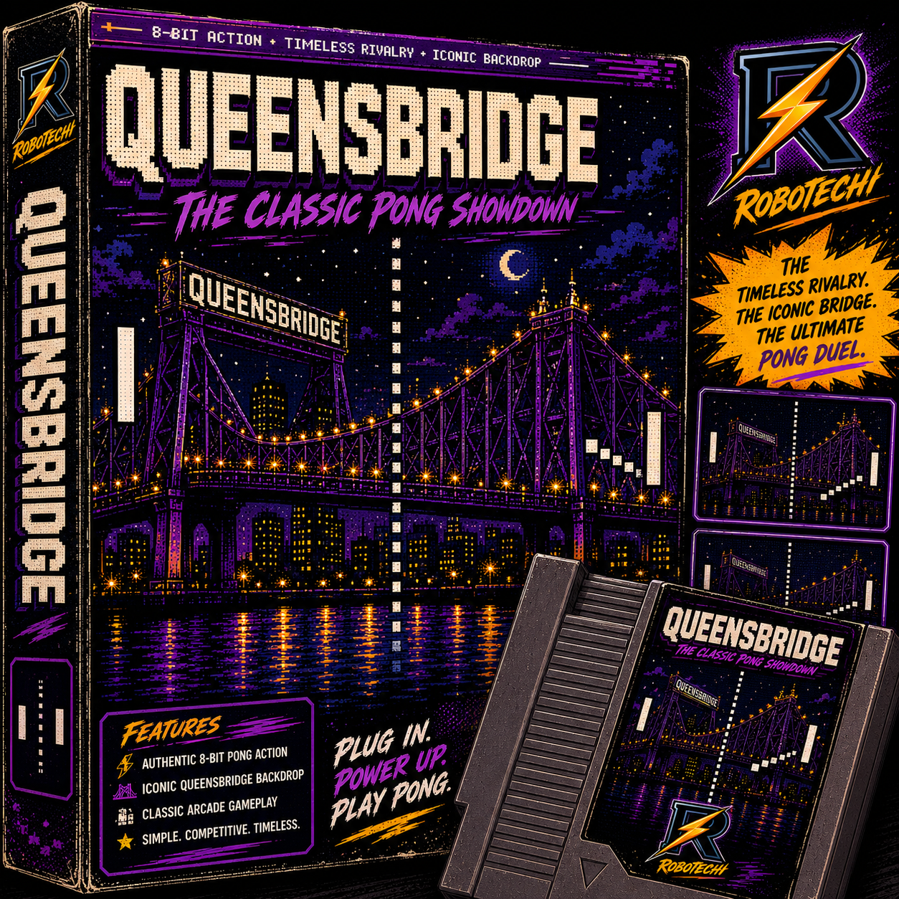

RoboTechi
RT-PONG AR
Allow camera access, then point your phone at the Queensbridge marker.
Checking AR target file...

Important: real marker tracking needs assets/targets/marker.mind.
Marker Found
PRESS START
Drag your finger or mouse vertically to control your paddle.
Queensbridge Night Run
Touch/drag up and down. First to 5 wins. Enjoy! - OdotNYC / RoboTechi
Game Over!